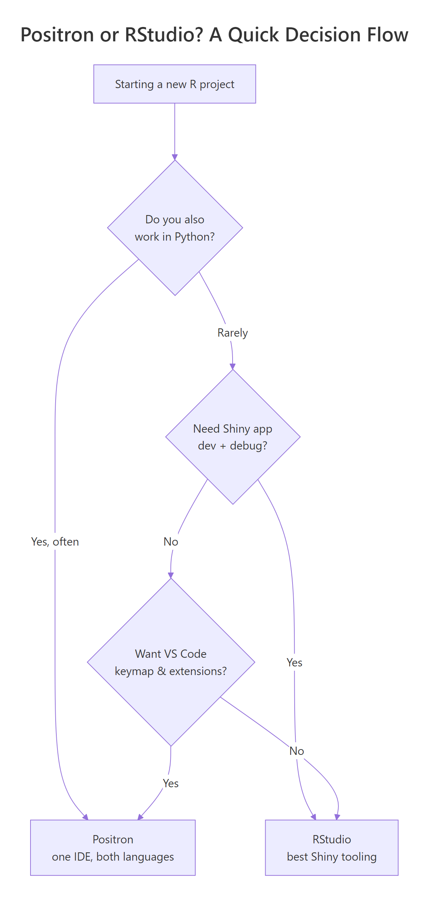
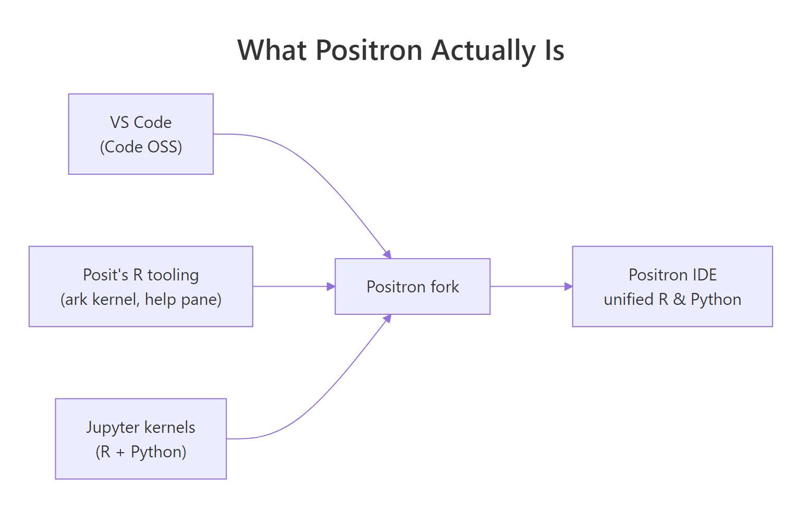

Positron vs RStudio: Should You Switch? A Feature-by-Feature Verdict
Positron is Posit's new IDE — a VS Code fork with first-class R and Python support. RStudio is the tool most R users already know. Here is what actually differs, what is genuinely better in each, and a clear rule for deciding which one to use.
If you have tried Positron for ten minutes you have probably already hit the main question: "This looks like VS Code with an R console. Is there a real reason to switch?" The short answer is that there is — but only for some workflows. For others, RStudio remains faster and less friction-heavy. This guide walks through the comparison feature by feature so you can decide based on the work you actually do, not on screenshots.

What is Positron and how is it different from RStudio?
Positron is built from Code OSS, the open-source codebase behind VS Code. Posit (the company formerly known as RStudio) forked Code OSS, added their own R language kernel (ark), integrated a data explorer, help pane and plots pane, and shipped the result as a desktop IDE. The UI feels like VS Code because it is VS Code underneath.

RStudio, by contrast, is a purpose-built IDE written specifically for R from the ground up. It predates Positron by more than a decade and has deep, hand-tuned integrations for R features that Positron is still catching up on.
The one-line difference: Positron treats R as one of two first-class languages (R + Python). RStudio treats R as the language and everything else as secondary.
How do the editor and code-completion compare?
This is where Positron has the biggest lead. Because it inherits the VS Code editor core, you get:
- Multi-cursor editing, column selection, and the full VS Code keymap.
- A vastly larger extension ecosystem — linters, git tools, themes, remote-development support, AI coding assistants.
- Better large-file performance. VS Code's editor handles 100,000-line files without lag; RStudio noticeably slows down past about 20,000 lines.
RStudio has its own strengths that Positron has not matched yet:
- Code completion is more context-aware for
$and[[ ]]on data frames in some edge cases, particularly with piped chains. - The source editor integrates more tightly with Sweave, Rnw and classic R Markdown documents. Positron supports Quarto well but lags on older formats.
For most modern R code — tidyverse pipes, Quarto, package development — completion quality is effectively tied. For legacy RMarkdown-heavy workflows, RStudio is still noticeably smoother.
Which has better tools for data analysis day-to-day?
This comparison is the closest to a tie, and the winner depends on what "data analysis" means to you.
Console and workspace. RStudio's Environment pane has been iterated on for over a decade and shows object previews the moment you run a line. Positron's variables pane is newer; it gets the job done but feels less immediate.
Data explorer. Positron's data explorer is surprisingly good. You can sort and filter data frames interactively, and it handles 100k+ row tables without reloading the whole data set. RStudio's View() is simpler but less capable on large tables.
Plots. RStudio's plots pane has a dedicated history, zoom, and export flow that many users have muscle memory for. Positron's plots pane is functional but plainer — no history navigation yet, and export requires right-clicking.
What about Python, Quarto, and mixed-language workflows?
This is where Positron flips the comparison completely.
Python in Positron is a first-class citizen. The same Variables pane, the same Plots pane, the same completion engine, the same debugger — it all just works. There is no extension to install, no kernel to configure. Open a .py file and you have a Python session as polished as the R one.
Python in RStudio works through reticulate. It is usable for calling Python from R, but it is not a Python IDE. You do not get native Python debugging, and the Python console is noticeably less responsive.
Quarto is fully supported in both, but Positron's preview opens inside the editor as a tab, which matches VS Code conventions. RStudio's Quarto integration opens the preview in a separate Viewer pane. Both work well.
Jupyter notebooks open natively in Positron with full kernel support — R and Python. RStudio does not open .ipynb files at all.
Which is better for Shiny and package development?
RStudio wins this round clearly.
Shiny apps. RStudio has had a "Run App" button and a hot-reload workflow for Shiny for over a decade. Positron supports Shiny through its shiny extension, but the feedback loop is not as tight yet, and the app preview is less polished.
Package development. RStudio's devtools integration — the "Build" pane with Check / Install / Test buttons — is still the reference experience. Positron can run the same commands, but through the terminal or command palette, not through a dedicated UI.
Debugging. Both IDEs support browser() and breakpoint-style debugging, and both are usable. RStudio's visual breakpoints in the source editor feel a shade more responsive.
Feature-by-feature verdict table
| Area | Positron | RStudio |
|---|---|---|
| Editor core | VS Code editor, multi-cursor, huge files | RStudio editor, slower on large files |
| Extensions | Full VS Code extension marketplace | Addins only, much smaller ecosystem |
| R console | Good | Excellent, reference experience |
| Environment / Variables | Functional | Excellent, instant previews |
| Data explorer | Excellent on large tables | Basic |
| Plots pane | Functional, no history | Excellent, with history and zoom |
| Python | First-class, same UX as R | Works via reticulate, not native |
| Jupyter notebooks | Native | Not supported |
| Quarto | Excellent | Excellent |
| Shiny dev | Works via extension | Excellent, dedicated UI |
| Package dev | Via command palette | Excellent, dedicated Build pane |
| Git integration | VS Code git (excellent) | RStudio git pane (good) |
| Remote / SSH / Dev Containers | Excellent (VS Code inheritance) | Limited |
So should you switch?
Here is the simple rule.
Switch to Positron if: you work in R and Python regularly, you want VS Code's editor and extensions, you open Jupyter notebooks, you work on large files, or you use remote development containers.
Stay on RStudio if: you build Shiny apps daily, you maintain R packages with heavy use of the Build pane, your work is 95%+ R and RMarkdown, or you have years of RStudio muscle memory you do not want to retrain.
There is no harm in using both. They install side by side. Open a project in whichever IDE fits the task. This is what a surprising number of experienced R users actually do.
Practice exercises
Exercise 1. Install Positron from posit.co/download/positron/, open a new R file, and run library(dplyr); head(starwars). Confirm the Variables pane shows starwars and the data explorer opens it by double-clicking the entry.
Solution
Exercise 2. In Positron, open the command palette (Ctrl+Shift+P / Cmd+Shift+P) and run R: Select Interpreter. List every R version Positron can see. If you installed rig previously, every rig-managed version should appear.
Solution
The command R: Select Interpreter opens a picker with every discoverable R installation. If rig is installed, all versions under rig's management show up with their paths. This is the Positron equivalent of RStudio's Tools → Global Options → R version selector.
Exercise 3. Pick a single R script you know well. Open it in both Positron and RStudio. Time how long it takes you to (a) run the whole script, (b) inspect one data frame, (c) save a plot to PNG. Note which IDE felt faster for each step.
Solution
This is a subjective exercise — there is no single right answer. Typical results: RStudio is faster for plot export, Positron is faster for inspecting large data frames, and "run the whole script" is usually a tie. The point is to make the decision based on your workflow, not on feature lists.
Complete example: a side-by-side smoke test
Run this in whichever IDE you want to evaluate. The same script should work identically in both.
Summary
- Positron is a VS Code fork with first-class R + Python support. RStudio is a purpose-built R IDE.
- Positron wins on editor, extensions, Python, Jupyter, large files, and remote development.
- RStudio wins on Shiny, package development, the Environment pane, and the Plots pane.
- Install both. Use whichever one fits the specific task you are about to do.
- The decision is not one-way. You can move a project between them freely — all project state lives in files, not in the IDE.